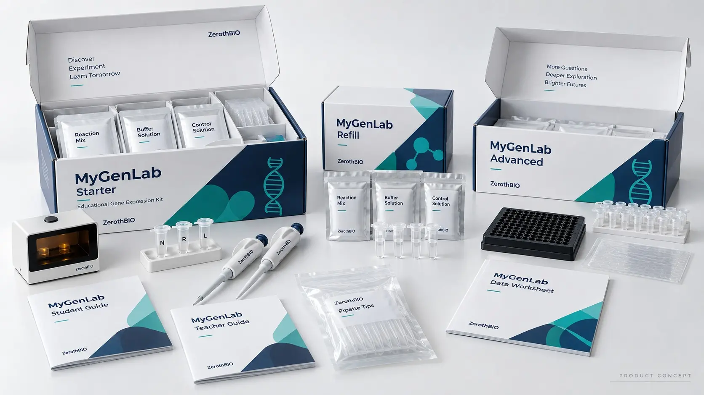
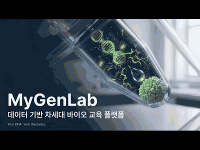
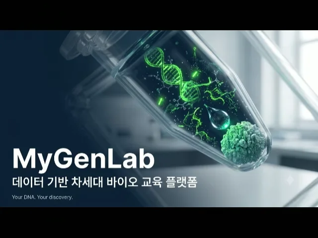

01
배양 인프라와 운영 부담
생세포 실험은 배양, 인큐베이션, 배지 준비, 생물학적 폐기 관리까지 학교가 감당해야 할 과정이 많습니다.
MyGenLab은 살아 있는 세포를 배양하지 않는 무세포(Cell-Free) 반응으로 학생이 유전자 발현을 직접 구성하고, 관찰하고, 비교하고, 근거로 논증하게 하는 합성생물학 교육 플랫폼입니다.
고등학교 이상 · 만 14세 이상 대상 · 대학 과정은 MyGenLab Campus
배양·인큐베이션·배지 준비 없이 무세포 반응으로 실험
별도 정량 분석기기(형광측정기·전기영동 장치 등)가 필요하지 않은 수업 설계
양성·음성 대조군 비교를 필수 학습 구조로 포함
2022 개정 교육과정 연계 설계, 교사 연수·자료 한국어 제공
생세포 실험은 배양, 인큐베이션, 배지 준비, 생물학적 폐기 관리까지 학교가 감당해야 할 과정이 많습니다.
실험이 틀어지면 정해진 수업 일정이 함께 흔들립니다. 교사에게는 이것이 가장 큰 도입 부담입니다.
결과를 구경하는 데서 멈추면 탐구·증거 기반 학습으로 이어지지 않습니다. 비교와 해석, 논증까지 가야 합니다.
핵심 질문은 하나입니다. “DNA에 저장된 정보는 어떻게 실제 생물학적 결과로 나타나는가?” 여섯 단계가 이 질문에 학생 스스로 답하게 합니다.
반응을 기다리는 시간도 수업입니다. 대기 시간 동안 학생은 예측 워크시트와 질문 가이드로 가설과 근거를 먼저 기록합니다 — 단백질이 만들어지기를 기다리는 실험이 아니라, 만들어지는 동안 생명 정보의 작동을 배우는 수업을 지향합니다.
MyGenLab의 모든 실험은 A/B 대조 구조를 기본으로 설계됩니다. 심화 과정에서는 구성물 비교군(C)으로 설계가 결과에 미치는 영향까지 탐구합니다.
DNA와 전체 구성으로 정상 발현 결과를 관찰합니다.
DNA를 빼고 반응시켜, DNA가 결과의 원인임을 스스로 검증합니다.
프로모터·RBS 등 설계 차이가 결과에 미치는 영향을 비교합니다.
학교 시간표와 반응 조건에 따라 준비 차시 + 관찰 차시의 2차시 운영도 공식 지원합니다.

재사용 실험 도구와 관찰 보조기구(여기광원·관찰 필터 적용), 첫 수업 1회분 반응 세트, 학생 워크시트와 교사용 가이드.
무세포 반응 시약, DNA·대조군 모듈, 소모품. 한 번 들인 도구로 다음 학기·다음 반 수업을 이어갑니다.
교사 워크숍, 수업 자료 업데이트, 실험 문제 해결 지원. 교사가 “내 교실에서도 된다”는 확신을 먼저 갖도록 설계했습니다.
MyGenLab은 구매보다 수업 검증 참여를 먼저 제안합니다. Founding Classroom 참여 학교는 교사 워크숍을 거쳐 실제 수업에서 MyGenLab을 운영하고, 그 경험이 제품의 최종 사양을 함께 결정합니다.
우선 대상: 과학중점고등학교 · 과학고등학교 · 영재교육 프로그램
피펫팅부터 관찰·해석·문제 해결까지 교사가 먼저 경험
실제 수업에서 운영, 준비 시간·판독 결과·학생 반응 공유
현장 피드백을 반영해 수업 자료와 구성을 함께 다듬기
학부 생명과학·생명공학 실험 과목을 위한 에디션. 서열 설계에서 구조 예측, 발현, 측정, 분석까지 하나의 워크플로로 연결하고, 학과가 보유한 표준 정량 장비와 함께 운영합니다.
교수진용 소개자료 요청무세포 유전자 발현이 관찰·측정·데이터 해석으로 이어지는 교육 흐름을 확인해 보세요.


YouTube에서 보기형광측정기·전기영동 장치 같은 별도 정량 분석기기는 필요하지 않습니다. 다만 형광 결과를 관찰하려면 여기광원과 관찰 필터가 필요하며, 이를 위한 관찰 보조기구가 Starter Bundle에 포함됩니다.
아닙니다. MyGenLab은 생세포 배양 과정 없이 무세포 반응으로 유전자 발현을 구성합니다. 학교별 관련 규정 적용 여부는 도입 상담 시 함께 확인해 드립니다.
만 14세 이상, 고등학교 이상을 대상으로 합니다. 과학중점고·과학고·영재교육 프로그램부터 시작하며, 대학 과정은 MyGenLab Campus로 제공합니다.
현재 Founding Classroom 파일럿을 운영하고 있으며, 정식 가격과 구매 경로는 출시 시점에 안내합니다. 도입을 검토 중이시면 아래로 문의해 주세요.
Founding Classroom 참여, 교사 워크숍, 교수진용 자료 요청 모두 환영합니다.
zerothbio01@gmail.com